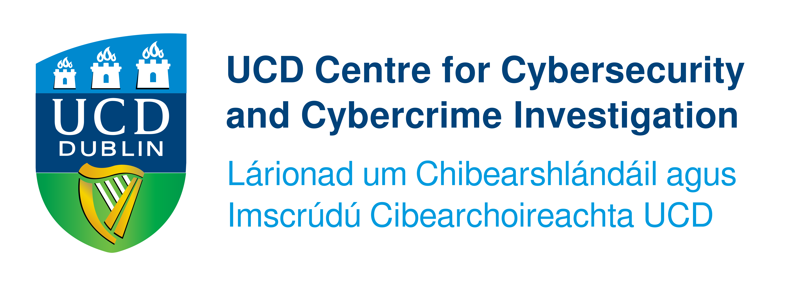
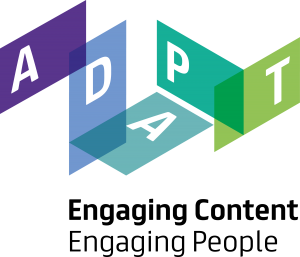
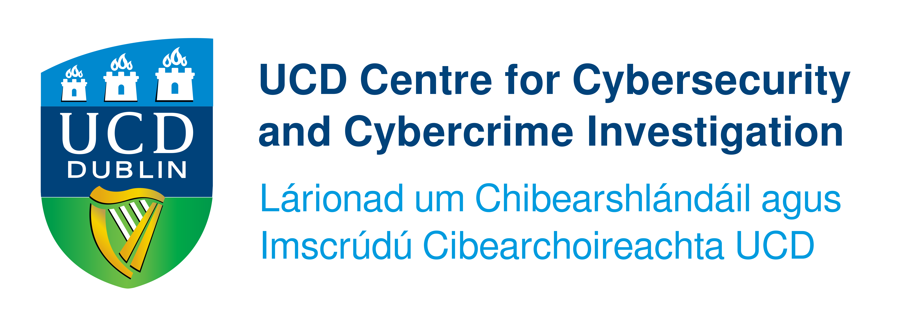
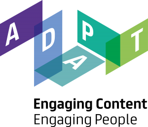
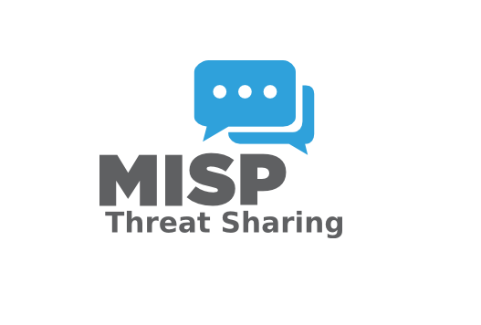
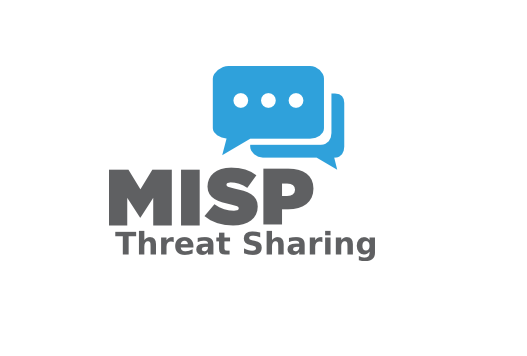

PhD Research: Incident Response

 



 

The IR Lab is a simulated incident response environment used to conduct a study where participants are trained and given IR tasks to respond to the same simulated incident scenario, following their own preferred workflow and decision-making process.
This study aims to create a dataset of cybersecurity IR activities.
The tools automatically record logs of responders activities and our log extraction tool (irlogextract) collects the logs and converts them into a dataset.
The dataset is loaded into our "Semantic Log Aggregation Tool and Machine Readable Knowledge Base" prototype to convert it into a machine-readable knowledge base for knowledge extraction and analysis. The structured knowledge graph helps analyse how people respond to different types of incidents. The aim is to better understand the process used during IR and explore ways of improving IR.
All data collected, used, and published from the study is anonymised.
If you would like the security team at your organisation to participate, kindly contact: haula.galadima@ucdconnect.ie
This is a prototype for Incident Response log synthesis and knowledge base. This tool extract incident response process logs from diverse Incident Response tools into machine readable knowledge base for automated knowledge management and learning to enhance Incident Response organisational cyber resilience.
In this work, we extend existing ontologies to create CIRPO to model the concepts and relationships in cybersecurity incident response processes. It provides a structured representation of Incident Response information covering incidents data, responder actions, and responder communication.
This is the ontology loaded into the "Semantic Log Aggregation Tool and Machine Readable Knowledge Base" Prototype
The IR Lab exhibition was part of the CyberWise event for school children, where our stand gave students hands-on access to a cybersecurity incident response tool and guided them through tasks as simulated defenders of an organisation under attack.
An interactive website on the tablet allowed them to enter their findings and check their progress, while the laptop and monitor displayed the live tool environment and posters provided step-by-step instructions.
We explore a novel approach that leverages LLMs to generate a dataset of realistic, synchronised and interlinked IR process activities, incidents, and IR team member communication logs.